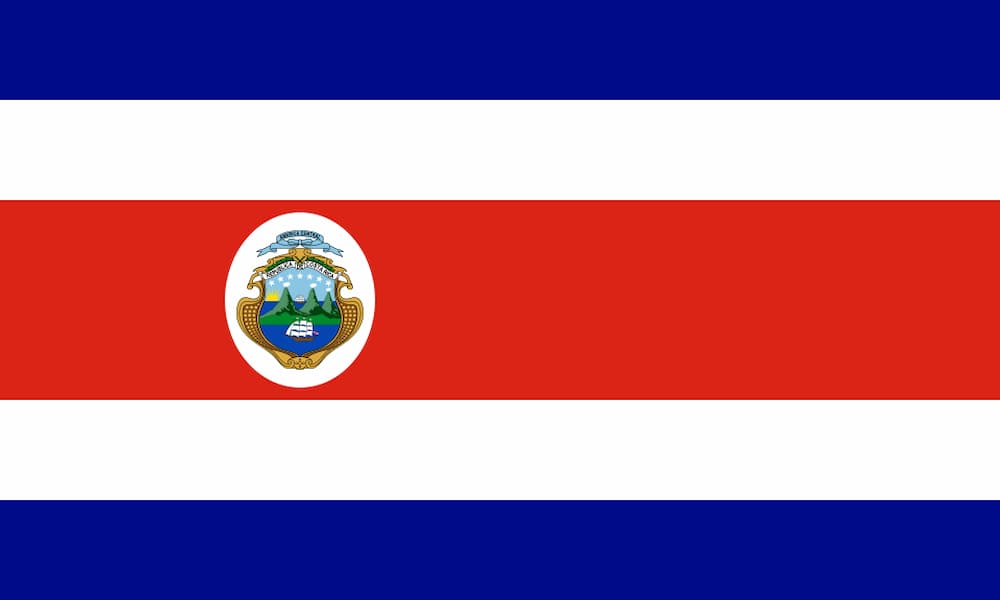

Tamara Moya
About Me
My name is Tamara and I am from Costa Rica. I enjoy learning web development, watching TV shows, listening to music, and spending time with family and friends. I love creative projects and learning new skills that help me grow personally and professionally. One of my goals is to become better at designing and developing websites using HTML, CSS, and JavaScript.
San Jose, Costa Rica

Official Flag of Costa Rica
Costa Rica is known for its beautiful beaches, rainforests, volcanoes, and incredible biodiversity. It is famous for ecotourism, national parks, and peaceful living. Costa Rica is located in Central America and is recognized worldwide for protecting nature and wildlife. Many people visit Costa Rica every year to enjoy its tropical climate, outdoor adventures, and friendly culture.